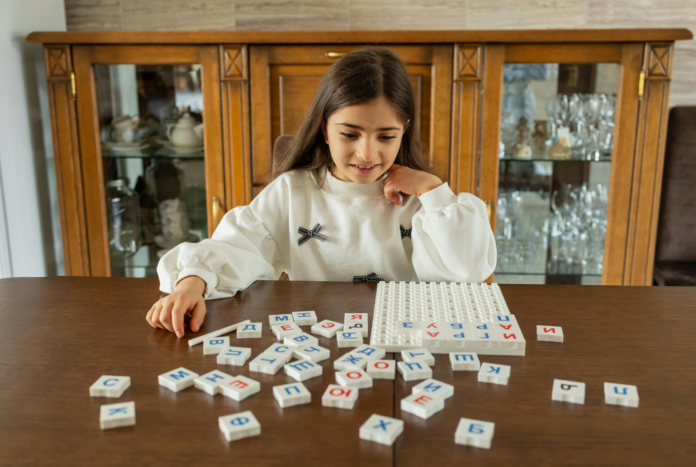

Understanding Child Development Milestones
Child development refers to the sequence of physical, language, thought, and emotional changes that occur in a child from birth to the beginning of adulthood. During this remarkable process, a child progresses from complete dependency on their parents/guardians to increasing independence, developing unique skills and personality traits. Understanding these milestones can help parents support their child's growth and identify potential areas where extra support might be beneficial.

Key Areas of Development
Development is typically categorized into several key domains, each equally important and interconnected:
- Cognitive Development: This involves the child's ability to learn, think, solve problems, and understand the world around them. It includes skills like memory, reasoning, and perception.
- Social and Emotional Development: Focuses on the child's ability to interact with others, form relationships, express and manage their emotions, and develop empathy.
- Speech and Language Development: Encompasses the child's ability to understand spoken language (receptive language) and to use language to communicate (expressive language), including babbling, first words, and forming sentences.
- Fine Motor Skill Development: Relates to the child's ability to use small muscles, specifically in their hands and fingers, for precise movements like grasping objects, drawing, buttoning clothes, and using utensils.
- Gross Motor Skill Development: Involves the child's ability to use large muscles in their legs, arms, and torso for broader movements like rolling over, sitting, crawling, walking, running, and jumping.
Milestones by Age Group (Examples)
It's important to remember that every child develops at their own unique pace. These milestones serve as general guidelines, not strict deadlines.
Infants (0-12 Months)
- 2 Months: Begins to smile at people, holds head up and begins to push up when on tummy, follows objects with eyes, coos and makes gurgling sounds.
- 4 Months: Babbles with expression, pushes down on legs when feet are on a hard surface, holds a toy and shakes it, brings hands to mouth.
- 6 Months: Rolls over in both directions, sits with support, passes objects from one hand to the other, responds to own name.
- 9 Months: Stands holding on, crawls, picks up tiny objects between thumb and forefinger (pincer grasp), waves "bye-bye."
- 12 Months: Pulls up to stand and walks holding on to furniture, may take a few steps alone, says "mama" and "dada" and a few other words, copies gestures.
- 18 Months: Walks independently, says several single words, points to show others what they want, scribbles.
- 2 Years: Runs, kicks a ball, says 2-word phrases, follows simple instructions, builds towers of 4 or more blocks.
- 3 Years: Climbs well, rides a tricycle, speaks in 3-5 word sentences, plays cooperatively with other children, dresses and undresses with assistance.
- 4 Years: Hops on one foot, catches a bounced ball most of the time, draws circles and squares, tells stories, understands the concept of "same" and "different."
- 5 Years: Skips, ties shoes (with practice), counts 10 or more objects, knows full name and address, speaks clearly enough for strangers to understand.
- 6-8 Years: Rides a two-wheel bike, learns to read, develops friendships, understands basic math concepts.
- 9-12 Years: Develops stronger reasoning skills, becomes more independent, shows interest in hobbies, understands complex rules in games.
- Cognitive: Develops abstract thinking, critical reasoning, and problem-solving skills; plans for the future.
- Social & Emotional: Forms stronger identity, establishes independence, values peer relationships, explores romantic interests, develops a moral compass.
- Physical: Experiences puberty, significant growth spurts, and changes in body composition.
- Language: Uses more complex sentence structures and vocabulary, engages in nuanced conversations.
- Read Aloud Regularly: Reading exposes children to a rich vocabulary, storytelling, and imaginative concepts, boosting cognitive and language skills from an early age.
- Engage in Play: Participate in interactive play that encourages physical activity (running, jumping), problem-solving (puzzles, building blocks), and social interaction (sharing, taking turns).
- Talk and Listen Actively: Have frequent conversations with your child, ask open-ended questions, and listen attentively to their responses. This validates their thoughts and encourages communication.
- Provide Age-Appropriate Stimuli: Offer a variety of toys, books, and activities that are suitable for their developmental stage to stimulate different areas of growth.
- Encourage Independence: Allow them to try tasks on their own, even if it takes longer or results in mistakes. This builds confidence, self-sufficiency, and problem-solving skills.
- Limit Screen Time: Encourage a balance between screen time and other activities like outdoor play, reading, and creative arts.
- Foster Social Connections: Arrange playdates and encourage participation in group activities to help them develop social skills and friendships.
- Seek Professional Guidance: Attend regular well-child checkups. Your pediatrician can monitor development, offer personalized advice, and provide referrals to specialists if any concerns arise.
- Missing Multiple Milestones: If your child consistently misses several milestones for their age group across different developmental areas.
- Loss of Previously Learned Skills: Any regression in skills (e.g., a child who was walking suddenly stops walking or talking).
- Lack of Response to Name or Sounds: By 6-9 months, infants should respond to their name and various sounds.
- Lack of Eye Contact or Social Interaction:** Limited smiling, babbling, or engaging with others.
- Unusual or Repetitive Behaviors:** Repetitive movements, strong resistance to change, or unusual play patterns.
- Significant Speech Delays:** Not speaking single words by 16 months or two-word phrases by 2 years.
Toddlers (1-3 Years)
Preschoolers (3-5 Years)
School-Aged Children (6-12 Years)
Adolescents (13-18 Years)
Supporting Your Child's Development
Parents and caregivers play a vital role in fostering healthy development. Here are some ways to support your child's journey through each developmental stage:
When to Seek Professional Help for Developmental Concerns
While every child develops at their own pace, it's important to be aware of potential signs that might warrant a conversation with your pediatrician. Early intervention can make a significant difference in supporting a child's development.
If you have any concerns, no matter how small, always discuss them with your pediatrician. They can provide guidance, conduct screenings, and refer you to specialists (like developmental pediatricians, speech therapists, or occupational therapists) if needed.
Disclaimer: This information is for general guidance only. Every child develops at their own unique pace, and variations are normal. If you have any concerns about your child's development, such as significant delays in reaching multiple milestones, please speak with your pediatrician or a qualified developmental specialist. Early intervention can make a significant difference.